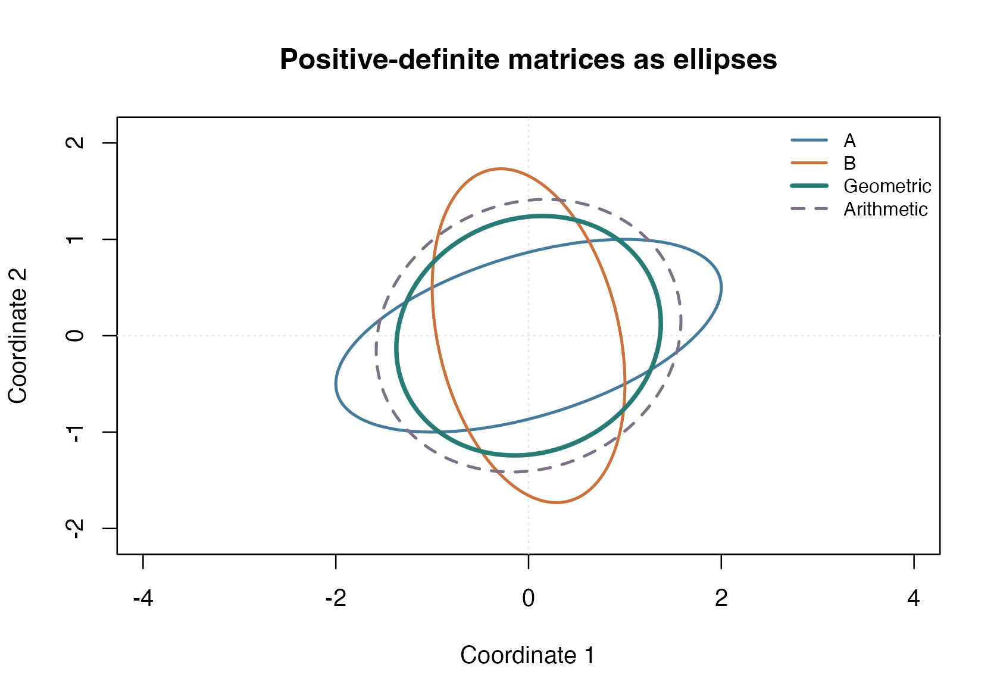

Average positive-definite matrices geometrically
Source:vignettes/articles/example-spd-mean.Rmd
example-spd-mean.RmdSymmetric positive-definite (SPD) matrices describe covariance, curvature, and other quantities whose geometry matters. Their arithmetic average is valid, but a geometric average depends on the metric you choose. This example computes the midpoint of two SPD matrices under the affine-invariant Riemannian metric.
We formulate the midpoint as an optimization problem. This
illustrates how to write an application with riem.problem()
rather than calling a dedicated statistical estimator.
Define the metric and objective
spd <- manifold.spd(2, metric = "airm")
A <- matrix(c(4, 1, 1, 1), nrow = 2)
B <- matrix(c(1, -0.5, -0.5, 3), nrow = 2)
problem <- riem.problem(
spd,
function(Z, data) {
(riem.sqdist(spd, Z, data$A) + riem.sqdist(spd, Z, data$B)) / 2
},
data = list(
A = torch_tensor(A, dtype = torch_float64(), device = "cpu"),
B = torch_tensor(B, dtype = torch_float64(), device = "cpu")
)
)riem.sqdist() uses the selected metric, so this
objective minimizes the average squared affine-invariant distance. The
matrices do not commute, making their midpoint more interesting than
taking coordinatewise geometric means.
fit <- riem.optimize(
problem,
torch_eye(2, dtype = torch_float64(), device = "cpu"),
method = "conjugate_gradient",
control = list(max_iterations = 100, gradient_tolerance = 1e-7),
device = "cpu"
)
fit
#> <riem_fit> conjugate_gradient on spd
#> Objective: 1.185086 | gradient norm: 3.6e-08
#> Termination: converged_gradient | iterations: 20
midpoint <- as.matrix(fit$point)
round(midpoint, 6)
#> [,1] [,2]
#> [1,] 1.882599 0.178303
#> [2,] 0.178303 1.542587This uses first derivatives of the matrix-distance objective. Matrix logarithms and roots have restrictions on automatic higher derivatives, so selecting a second-order solver for another SPD objective requires checking its derivative contract. A small gradient norm and manifold membership are both useful checks.
Compare with the closed-form midpoint
For two SPD matrices, the affine-invariant midpoint is
An independent base-R implementation uses symmetric eigendecompositions. All eigenvalues here are positive and safely away from zero.
symmetric_power <- function(Z, exponent) {
decomposition <- eigen(Z, symmetric = TRUE)
decomposition$vectors %*% diag(decomposition$values^exponent) %*%
t(decomposition$vectors)
}
root <- symmetric_power(A, 0.5)
inverse_root <- symmetric_power(A, -0.5)
reference <- root %*%
symmetric_power(inverse_root %*% B %*% inverse_root, 0.5) %*% root
data.frame(
check = c("Frobenius error against formula", "Smallest eigenvalue",
"Metric gradient norm"),
value = c(norm(midpoint - reference, type = "F"),
min(eigen(midpoint, symmetric = TRUE)$values),
fit$gradient_norm)
)
#> check value
#> 1 Frobenius error against formula 2.567663e-08
#> 2 Smallest eigenvalue 1.466232e+00
#> 3 Metric gradient norm 3.600225e-08
stopifnot(riem.belongs(spd, fit$point),
norm(midpoint - reference, type = "F") < 1e-6)Visualize the matrices as ellipses
Map the unit circle by the symmetric square root of each matrix. The resulting ellipses show the directions and relative scales encoded by the matrices; they are not probability confidence regions.
angle <- seq(0, 2 * pi, length.out = 201)
circle <- rbind(cos(angle), sin(angle))
ellipse <- function(Z) t(symmetric_power(Z, 0.5) %*% circle)
matrices <- list(A = A, B = B, Geometric = midpoint, Arithmetic = (A + B) / 2)
curves <- lapply(matrices, ellipse)
colors <- c("#447A9C", "#CD713B", "#267C74", "#7B7186")
plot(curves[[1]], type = "n", asp = 1, xlim = c(-2.3, 2.3),
ylim = c(-2.1, 2.1), xlab = "Coordinate 1", ylab = "Coordinate 2",
main = "Positive-definite matrices as ellipses")
abline(h = 0, v = 0, col = "#E2E8ED", lty = 3)
for (i in seq_along(curves)) {
lines(curves[[i]], col = colors[i], lwd = if (i == 3) 3 else 2,
lty = if (i == 4) 2 else 1)
}
legend("topright", names(curves), col = colors, lwd = c(2, 2, 3, 2),
lty = c(1, 1, 1, 2), bty = "n", cex = 0.8)
The metric changes the shape and scale of the average.
The geometric midpoint obeys . The arithmetic average generally has a different determinant.
data.frame(
matrix = names(matrices),
determinant = vapply(matrices, det, numeric(1))
)
#> matrix determinant
#> A A 3.000000
#> B B 2.750000
#> Geometric Geometric 2.872281
#> Arithmetic Arithmetic 4.937500For more than two matrices, replace the two distance terms with a
weighted sum. The same problem interface applies, but the two-matrix
closed-form reference above no longer gives the answer. Changing the
geometry to metric = "lerm" defines a different,
log-Euclidean averaging problem. Keep the metric explicit when comparing
results.
This example forces CPU execution. On a workstation,
device = "auto" enables device discovery while retaining
float64; an explicit device = "cpu" continues to override
available accelerators.
For more than two observed covariance matrices, see the time-series covariance application, which compares affine-invariant and log-Euclidean means.